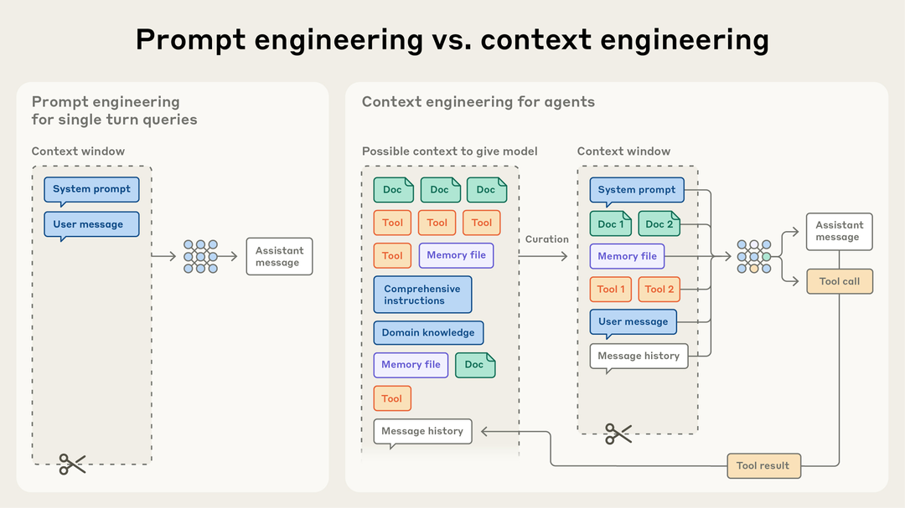

原文：Effective context engineering for AI agents 来源：Anthropic Engineering | 2025-09-29 作者：Prithvi Rajasekaran, Ethan Dixon, Carly Ryan, Jeremy Hadfield
· · ·
· · ·
在应用 AI 领域，prompt engineering 作为关注焦点已经持续了几年，现在一个新术语开始崭露头角：context engineering（上下文工程）。用语言模型构建应用越来越不是关于为 prompt 找到正确的措辞，而是关于回答一个更广泛的问题："什么样的上下文配置最可能产生模型的期望行为？"
上下文（context）指的是从大语言模型（LLM）采样时包含的 token 集合。工程问题在于：在 LLM 固有约束下优化这些 token 的效用，以一致地达成期望结果。有效驾驭 LLM 通常需要在上下文中思考——换句话说：考虑 LLM 在任何给定时刻可用的整体状态，以及该状态可能产生什么行为。
在这篇文章中，我们将探索上下文工程这门新兴技艺，并提供一个精炼的心智模型来构建可控、有效的 agent。
· · ·
在 Anthropic，我们将上下文工程视为 prompt 工程的自然演进。Prompt 工程指的是为最优结果编写和组织 LLM 指令的方法。上下文工程则指的是在 LLM 推理期间策划和维护最优 token 集合（信息）的策略集——包括 prompt 之外可能进入上下文的所有其他信息。
在 LLM 工程的早期，prompting 是 AI 工程工作的最大组成部分，因为日常聊天交互之外的大多数用例需要为一次性分类或文本生成任务优化的 prompt。如术语所暗示的，prompt 工程的主要焦点是如何编写有效的 prompt，特别是 system prompt。
然而，随着我们转向构建更强大的 agent——它们在多轮推理和更长时间跨度上运行——我们需要管理整个上下文状态的策略（系统指令、工具、MCP、外部数据、消息历史等）。在循环中运行的 agent 会生成越来越多可能与下一轮推理相关的数据，这些信息必须被循环精炼。
上下文工程是从不断演变的可能信息宇宙中策划什么将进入有限上下文窗口的艺术和科学。 与编写 prompt 这个离散任务不同，上下文工程是迭代的——策划阶段在每次我们决定传递什么给模型时都会发生。
· · ·
尽管 LLM 速度快且能管理越来越大的数据量，我们观察到 LLM 和人类一样，在某个点上会失去焦点或产生困惑。Needle-in-a-haystack 风格的 benchmark 研究揭示了上下文腐蚀（context rot） 的概念：随着上下文窗口中 token 数量增加，模型从该上下文中准确回忆信息的能力下降。虽然某些模型的退化比其他模型更平缓，但这一特性在所有模型中都会出现。
因此，上下文必须被视为边际收益递减的有限资源。就像人类有有限的工作记忆容量一样，LLM 有一个"注意力预算"，在解析大量上下文时会消耗它。每引入一个新 token 都会在一定程度上消耗这个预算，增加了仔细策划 LLM 可用 token 的必要性。
这种注意力稀缺源于 LLM 的架构约束。LLM 基于 transformer 架构，使每个 token 能关注整个上下文中的每个其他 token。这导致 n 个 token 产生 n² 个成对关系。随着上下文长度增加，模型捕捉这些成对关系的能力被摊薄，在上下文大小和注意力聚焦之间产生自然张力。
此外，模型从训练数据分布中发展其注意力模式，而较短序列通常比较长序列更常见。这意味着模型对上下文范围依赖的经验更少，专门参数也更少。位置编码插值等技术允许模型通过适应原始训练的较小上下文来处理更长序列，但会有一些 token 位置理解的退化。
这些因素创造的是性能梯度而非硬悬崖：模型在较长上下文中仍然高度能干，但与较短上下文上的表现相比，可能在信息检索和长程推理方面显示出精度降低。这些现实意味着深思熟虑的上下文工程对构建强大 agent 至关重要。
· · ·
鉴于 LLM 受有限注意力预算约束，好的上下文工程意味着找到最小的高信号 token 集合，最大化某个期望结果的可能性。实践起来说易行难，但在以下部分，我们概述这一指导原则在上下文不同组件中的实际含义。

System prompt 应该极其清晰，使用简单、直接的语言，在正确的"高度"向 agent 呈现想法。正确的高度是两种常见失败模式之间的 Goldilocks 区间。
一个极端是工程师在 prompt 中硬编码复杂、脆弱的逻辑来引出精确的 agentic 行为。这种方法创造了脆弱性，随时间增加维护复杂度。另一个极端是工程师提供模糊、高层的指导，未能给 LLM 关于期望输出的具体信号，或错误地假设共享上下文。
最优高度取得平衡： 足够具体以有效引导行为，又足够灵活以为模型提供强启发式来指导行为。
我们建议将 prompt 组织为不同的部分（如 <background_information>、<instructions>、## Tool guidance、## Output description 等），使用 XML 标签或 Markdown 标题来划分这些部分——尽管随着模型变得更强大，prompt 的精确格式可能变得不那么重要。
无论你如何决定构建 system prompt，你应该追求完整概述期望行为的最小信息集。（注意"最小"不一定意味着"短"；你仍然需要预先给 agent 足够的信息以确保它遵循期望行为。）最好先用最好的可用模型测试一个最小 prompt 看它在你的任务上表现如何，然后根据初始测试中发现的失败模式添加清晰的指令和示例来改进性能。
工具允许 agent 与环境交互并在工作时拉入新的额外上下文。因为工具定义了 agent 与其信息/行动空间之间的契约，工具促进效率极其重要——既要返回 token 高效的信息，又要鼓励高效的 agent 行为。
在《用 Agent 为 Agent 编写有效工具》中，我们讨论了构建 LLM 能很好理解且功能重叠最小的工具。类似于设计良好的代码库中的函数，工具应该是自包含的、对错误健壮的，并且在预期用途方面极其清晰。输入参数同样应该是描述性的、无歧义的，并发挥模型的固有优势。
我们看到的最常见失败模式之一是臃肿的工具集——覆盖太多功能或导致关于使用哪个工具的模糊决策点。如果人类工程师都无法明确说出在给定情况下应该使用哪个工具，AI agent 也不能被期望做得更好。
提供示例（即 few-shot prompting）是一个众所周知的最佳实践，我们继续强烈建议。然而，团队经常将一长串边缘情况塞入 prompt，试图阐明 LLM 对特定任务应遵循的每条可能规则。我们不推荐这样做。相反，我们建议策划一组多样化的、典型的示例，有效地展示 agent 的期望行为。对 LLM 来说，示例是"胜过千言万语的图片"。
我们对上下文不同组件（system prompt、工具、示例、消息历史等）的总体指导是：深思熟虑，保持上下文信息丰富但紧凑。现在让我们深入运行时动态检索上下文。
· · ·
在《构建有效的 AI Agent》中，我们强调了基于 LLM 的工作流和 agent 之间的区别。自那篇文章以来，我们倾向于一个简单定义：agent 就是 LLM 在循环中自主使用工具。与客户合作中，我们看到行业正在向这个简单范式收敛。随着底层模型变得更强大，agent 的自主程度可以扩展：更聪明的模型允许 agent 独立导航细微的问题空间并从错误中恢复。
我们现在看到工程师在为 agent 设计上下文方面的思维转变。今天，许多 AI 原生应用采用某种形式的基于嵌入的推理前检索来为 agent 呈现重要上下文。随着领域向更 agentic 的方法过渡，我们越来越多地看到团队用"即时"（just in time）上下文策略来增强这些检索系统。
agent 不是预先处理所有相关数据，而是维护轻量级标识符（文件路径、存储的查询、网页链接等），并使用这些引用在运行时通过工具动态加载数据到上下文中。
Anthropic 的 agentic 编码方案 Claude Code 使用这种方法对大型数据库执行复杂数据分析。模型可以编写有针对性的查询、存储结果，并利用 head 和 tail 等 Bash 命令分析大量数据，而无需将完整数据对象加载到上下文中。
这种方法镜像了人类认知：我们通常不会记忆整个信息语料库，而是引入外部组织和索引系统（如文件系统、收件箱和书签）来按需检索相关信息。除了存储效率，这些引用的元数据提供了一种高效精炼行为的机制。对于在文件系统中操作的 agent，tests 文件夹中名为 test_utils.py 的文件暗示的用途与 src/core_logic/ 中同名文件不同。文件夹层次结构、命名约定和时间戳都提供重要信号，帮助人类和 agent 理解如何以及何时利用信息。
让 agent 自主导航和检索数据还实现了渐进式披露——允许 agent 通过探索逐步发现相关上下文。每次交互产生的上下文为下一个决策提供信息：文件大小暗示复杂度；命名约定暗示用途；时间戳可以作为相关性的代理。Agent 可以逐层组装理解，只在工作记忆中保持必要的内容，并利用笔记策略获得额外持久性。
当然，存在权衡：运行时探索比检索预计算数据更慢。不仅如此，还需要有主见的、深思熟虑的工程来确保 LLM 有正确的工具和启发式来有效导航其信息景观。没有适当指导，agent 可能通过误用工具、追逐死胡同或未能识别关键信息来浪费上下文。
在某些设置中，最有效的 agent 可能采用混合策略——预先检索一些数据以提高速度，并在其判断下进行进一步的自主探索。"正确"自主程度的决策边界取决于任务。
Claude Code 就是采用这种混合模型的 agent：CLAUDE.md 文件被直接放入上下文，而 glob 和 grep 等原语允许它导航环境并即时检索文件，有效绕过了陈旧索引和复杂语法树的问题。混合策略可能更适合内容不太动态的上下文，如法律或金融工作。
随着模型能力提升，agentic 设计将趋向于让智能模型智能地行动，逐步减少人类策划。鉴于该领域的快速进展，"做最简单的有效方案" 可能仍然是我们对在 Claude 之上构建 agent 的团队的最佳建议。
· · ·
长时间跨度任务要求 agent 在 token 数超过 LLM 上下文窗口的行动序列中保持连贯性、上下文和目标导向行为。对于跨越数十分钟到数小时持续工作的任务——如大型代码库迁移或综合研究项目——agent 需要专门技术来绕过上下文窗口大小限制。
等待更大的上下文窗口似乎是显而易见的策略。但在可预见的未来，所有大小的上下文窗口都可能受到上下文污染和信息相关性问题的影响——至少在需要最强 agent 性能的情况下。
为了让 agent 在延长的时间跨度上有效工作，我们开发了几种直接解决这些上下文污染约束的技术：压缩（compaction）、结构化笔记和多 agent 架构。
压缩是将接近上下文窗口限制的对话进行总结，然后用总结重新初始化新上下文窗口的做法。压缩通常是上下文工程中驱动更好长期连贯性的第一个杠杆。
其核心是以高保真方式蒸馏上下文窗口的内容，使 agent 能以最小性能退化继续工作。例如在 Claude Code 中，我们通过将消息历史传递给模型来总结和压缩最关键的细节。模型保留架构决策、未解决的 bug 和实现细节，同时丢弃冗余的工具输出或消息。然后 agent 可以用这个压缩上下文加上最近访问的五个文件继续工作。用户获得连续性而无需担心上下文窗口限制。
压缩的艺术在于选择保留什么与丢弃什么，因为过于激进的压缩可能导致丢失微妙但关键的上下文——其重要性可能只在后来才变得明显。
对于实现压缩系统的工程师，我们建议在复杂 agent trace 上仔细调优你的 prompt。先最大化召回率以确保压缩 prompt 捕获 trace 中每条相关信息，然后迭代改进精确度以消除多余内容。一个容易摘取的多余内容是清除工具调用和结果——一旦工具在消息历史深处被调用过，agent 为什么还需要再看原始结果？最安全、最轻量的压缩形式之一是工具结果清除，最近作为 Claude 开发者平台的功能推出。
结构化笔记（或 agentic memory）是 agent 定期将笔记写入上下文窗口之外的持久化存储的技术。这些笔记在后续时间被拉回上下文窗口。这种策略以最小开销提供持久记忆。
就像 Claude Code 创建待办列表，或你的自定义 agent 维护 NOTES.md 文件一样，这个简单模式允许 agent 跟踪复杂任务的进度，维护否则会在数十次工具调用中丢失的关键上下文和依赖关系。
Claude 玩 Pokémon 展示了记忆如何在非编码领域转变 agent 能力。Agent 在数千个游戏步骤中维护精确计数——跟踪目标如"在过去 1,234 步中我一直在 Route 1 训练我的 Pokémon，Pikachu 已经向目标 10 级获得了 8 级"。无需任何关于记忆结构的提示，它开发了已探索区域的地图，记住解锁了哪些关键成就，并维护帮助它学习哪些攻击对不同对手最有效的战斗策略笔记。上下文重置后，agent 读取自己的笔记并继续多小时的训练序列或地牢探索。这种跨总结步骤的连贯性使得仅靠将所有信息保持在 LLM 上下文窗口中不可能实现的长期策略成为可能。
作为 Sonnet 4.5 发布的一部分，我们在 Claude 开发者平台上以公开测试版发布了记忆工具，通过基于文件的系统更容易地存储和查阅上下文窗口之外的信息。
子 agent 架构提供了另一种绕过上下文限制的方式。不是一个 agent 试图在整个项目中维护状态，而是专门的子 agent 可以用干净的上下文窗口处理聚焦的任务。主 agent 用高层计划协调，而子 agent 执行深度技术工作或使用工具查找相关信息。
每个子 agent 可能进行广泛探索，使用数万 token 或更多，但只返回其工作的浓缩、蒸馏摘要（通常 1,000-2,000 token）。这种方法实现了清晰的关注点分离——详细的搜索上下文保持在子 agent 内部隔离，而主 agent 专注于综合和分析结果。
这种模式在《我们如何构建多 agent 研究系统》中讨论过，在复杂研究任务上比单 agent 系统有实质性改进。
这些方法之间的选择取决于任务特性：
即使模型继续改进，在延长交互中维护连贯性的挑战仍将是构建更有效 agent 的核心。
· · ·
上下文工程代表了我们用 LLM 构建方式的根本转变。随着模型变得更强大，挑战不仅仅是打造完美的 prompt——而是在每一步深思熟虑地策划什么信息进入模型有限的注意力预算。
无论你是为长时间跨度任务实现压缩、设计 token 高效的工具，还是让 agent 即时探索其环境，指导原则保持不变：找到最小的高信号 token 集合，最大化期望结果的可能性。
我们概述的技术将随着模型改进而继续演进。我们已经看到更聪明的模型需要更少的规定性工程，允许 agent 以更大自主性运行。但即使能力扩展，将上下文视为珍贵的有限资源仍将是构建可靠、有效 agent 的核心。
· · ·